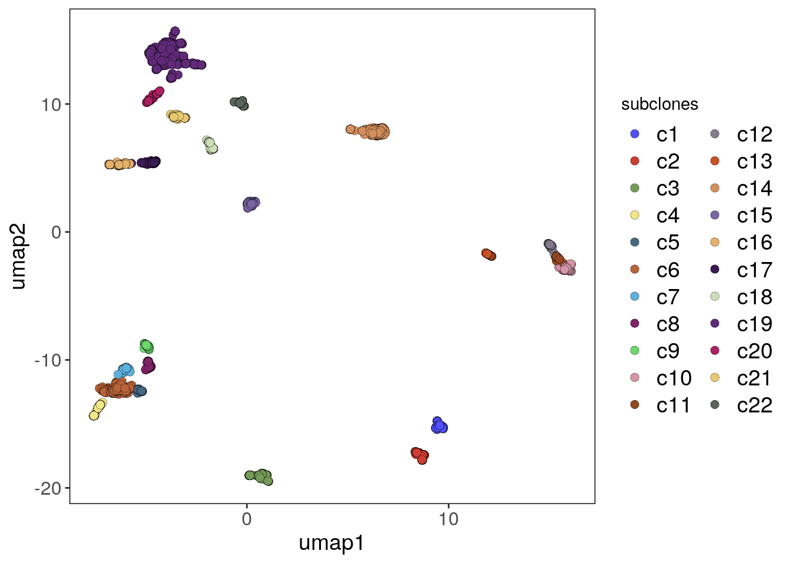

4 CM1 and CM2
4.1 CM1
4.2 CM1 colon
# Running data with CopyKit for the primary colon sample
cm1_tumor_primary <- runVarbin("/mnt/lab/users/dminussi/projects/CopyKit_Manuscript_Code/datasets/CM1/colon/marked_bams", remove_Y = TRUE)## Counting reads for genome hg38 and resolution: 200kb## 441 bam files had less than 10 mean bincounts and were removed.## Performing GC correction.## Smoothing bin counts.## Running segmentation algorithm: CBS for genome hg38## Merging levels.## Done.# Finding diploid and low-quality cells and excluding it from the copykit object
cm1_tumor_primary <- findOutliers(cm1_tumor_primary)## Calculating correlation matrix.## Marked 376 cells as outliers.## Adding information to metadata. Access with colData(scCNA).## Done.cm1_tumor_primary <- findAneuploidCells(cm1_tumor_primary)## number of iterations= 11## Copykit detected 39 that are possibly euploid cells using a resolution of: 0.047## Added information to colData(CopyKit).cm1_tumor_primary <- cm1_tumor_primary[,colData(cm1_tumor_primary)$outlier == FALSE]
cm1_tumor_primary <- cm1_tumor_primary[,colData(cm1_tumor_primary)$is_aneuploid == TRUE]
# Adding the tissue information to colData
colData(cm1_tumor_primary)$timepoint <- 'primary'4.3 CM1 liver
# Running data with CopyKit for the liver sample
cm1_tumor_met <-
runVarbin(
"/mnt/lab/users/dminussi/projects/CopyKit_Manuscript_Code/datasets/CM1/liver/marked_bams",
remove_Y = TRUE
)## Counting reads for genome hg38 and resolution: 200kb## 549 bam files had less than 10 mean bincounts and were removed.## Performing GC correction.## Smoothing bin counts.## Running segmentation algorithm: CBS for genome hg38## Merging levels.## Done.# Finding diploid and low-quality cells and excluding it from the copykit object
cm1_tumor_met <- findOutliers(cm1_tumor_met)## Calculating correlation matrix.## Marked 104 cells as outliers.## Adding information to metadata. Access with colData(scCNA).## Done.cm1_tumor_met <- findAneuploidCells(cm1_tumor_met)## number of iterations= 6## Copykit detected 16 that are possibly euploid cells using a resolution of: 0.053## Added information to colData(CopyKit).cm1_tumor_met <-
cm1_tumor_met[, colData(cm1_tumor_met)$outlier == FALSE]
cm1_tumor_met <-
cm1_tumor_met[, colData(cm1_tumor_met)$is_aneuploid == TRUE]
# Adding the tissue information to colData
colData(cm1_tumor_met)$timepoint <- 'metastasis'4.4 CM1 merging
# Merging the three copykit objects
cm1_merged <- cbind(cm1_tumor_primary,
cm1_tumor_met)
cm1_merged <- runUmap(cm1_merged)## Using assay: logr## Embedding data with UMAP. Using seed 17## Access reduced dimensions slot with: SingleCellExperiment::reducedDim(scCNA, 'umap').## Done.cm1_merged <- findSuggestedK(cm1_merged)## Calculating jaccard similarity for k range: 10 11 12 13 14 15 16 17 18 19 20 21 22 23 24 25 26 27 28 29 30 31 32 33 34 35 36 37 38 39 40 41 42 43 44 45 46 47 48 49 50 51 52 53 54 55 56 57## ## Suggested k = 46 with median jaccard similarity of: 0.955cm1_merged_suggestedk <- plotSuggestedK(cm1_merged)
cm1_merged_suggestedk
cm1_merged <- findClusters(cm1_merged)## Using suggested k_subclones = 46## Finding clusters, using method: hdbscan## Found 340 outliers cells (group 'c0')## Found 20 subclones.## Done.# HDBSCAN is an outlier aware clustering algorithm
# in this analysis all cells marked as outliers (c0) from hdbscan are excluded.
cm1_merged <- cm1_merged[, colData(cm1_merged)$subclones != 'c0']
cm1_merged_tp_umap_p <- plotUmap(cm1_merged, label = 'timepoint')## Plotting Umap.## Coloring by: timepoint.cm1_merged_tp_umap_p
cm1_merged_umap_p <- plotUmap(cm1_merged, label = 'subclones')## Plotting Umap.## Coloring by: subclones.cm1_merged_umap_p
cm1_merged <- calcConsensus(cm1_merged)
cm1_merged <- runConsensusPhylo(cm1_merged)
colData(cm1_merged)$timepoint <-
forcats::fct_relevel(colData(cm1_merged)$timepoint,
c("primary", "metastasis"))
cm1_selected_genes = c(
"SMAD3",
"FHIT",
"APC",
"SOX4",
"IGFBP7",
"CDK8",
"PIK3CA",
"MYC",
'TP53',
"GATA4",
"CHEK1",
"TGFB1",
"TIAM1"
)
cm1_merged_selected_hvg_gc <-
plotGeneCopy(cm1_merged,
genes = cm1_selected_genes,
label = 'timepoint',
dodge.width = .8) + scale_fill_hue(direction = -1)## Coloring by: timepoint## Scale for 'fill' is already present. Adding another scale for 'fill', which will replace the existing scale.cm1_merged_selected_hvg_gc
To root the tree, we will use an inferred Most Recent Common Ancestral from the primary tumor and provide that as an argument to the runConsensusPhylo function. This consensus tree will be used by plotHeatmap to order the subclones on the plot
# clustering and inferring the MRCA from the clusters
cm1_tumor_primary <- runUmap(cm1_tumor_primary)## Using assay: logr## Embedding data with UMAP. Using seed 17## Access reduced dimensions slot with: SingleCellExperiment::reducedDim(scCNA, 'umap').## Done.cm1_tumor_primary <- findSuggestedK(cm1_tumor_primary)## Calculating jaccard similarity for k range: 10 11 12 13 14 15 16 17 18 19 20 21 22 23 24 25 26 27 28 29 30 31 32 33 34 35 36 37 38 39 40 41## ## Suggested k = 34 with median jaccard similarity of: 0.995cm1_tumor_primary <- findClusters(cm1_tumor_primary)## Using suggested k_subclones = 34## Finding clusters, using method: hdbscan## Found 219 outliers cells (group 'c0')## Found 12 subclones.## Done.# HDBSCAN is an outlier aware clustering algorithm
# in this analysis all cells marked as outliers (c0) from hdbscan are excluded.
cm1_tumor_primary <-
cm1_tumor_primary[, colData(cm1_tumor_primary)$subclones != 'c0']
# calculating the consensus of the Merged dataset and using the inferred
# primary MRCA as the root of the tree
cm1_tumor_primary <- calcConsensus(cm1_tumor_primary)
cm1_tumor_primary <- inferMrca(cm1_tumor_primary)
cm1_merged <- runConsensusPhylo(
cm1_merged,
root = 'user',
root_user = metadata(cm1_tumor_primary)$inferred_mrca
)
# relevel factors to plot in the desired order
colData(cm1_merged)$timepoint <-
forcats::fct_relevel(colData(cm1_merged)$timepoint,
c("metastasis", "primary"))
# plotting the phylogeny with subclones labels and pie charts
#indicating the frequency of each timepoint
cm1_merged_consensus_phylo <-
plotPhylo(cm1_merged,
label = 'subclones',
consensus = TRUE,
group = 'timepoint')
cm1_merged_consensus_phylo
plotHeatmap(cm1_merged, label = c('subclones', 'timepoint'))## Plotting Heatmap.
plotHeatmap(
cm1_merged,
label = c('subclones'),
consensus = TRUE,
genes = cm1_selected_genes
)## Plotting Heatmap.
4.5 CM2
4.6 CM2 colon
# Running data with CopyKit for the primary colon sample
cm2_tumor_primary <- runVarbin("/mnt/lab/users/dminussi/projects/CopyKit_Manuscript_Code/datasets/CM2/colon/marked_bams", remove_Y = TRUE)## Counting reads for genome hg38 and resolution: 200kb## 89 bam files had less than 10 mean bincounts and were removed.## Performing GC correction.## Smoothing bin counts.## Running segmentation algorithm: CBS for genome hg38## Merging levels.## Done.# Finding diploid and low-quality cells and excluding it from the copykit object
cm2_tumor_primary <- findOutliers(cm2_tumor_primary)## Calculating correlation matrix.## Marked 126 cells as outliers.## Adding information to metadata. Access with colData(scCNA).## Done.cm2_tumor_primary <- findAneuploidCells(cm2_tumor_primary)## number of iterations= 9## Copykit detected 10 that are possibly euploid cells using a resolution of: 0.051## Added information to colData(CopyKit).cm2_tumor_primary <- cm2_tumor_primary[,colData(cm2_tumor_primary)$outlier == FALSE]
cm2_tumor_primary <- cm2_tumor_primary[,colData(cm2_tumor_primary)$is_aneuploid == TRUE]
# Adding the tissue information to colData
colData(cm2_tumor_primary)$timepoint <- 'primary'4.7 CM2 liver
# Running data with CopyKit for the liver sample
cm2_tumor_met <-
runVarbin(
"/mnt/lab/users/dminussi/projects/CopyKit_Manuscript_Code/datasets/CM2/liver/marked_bams",
remove_Y = TRUE
)## Counting reads for genome hg38 and resolution: 200kb## 149 bam files had less than 10 mean bincounts and were removed.## Performing GC correction.## Smoothing bin counts.## Running segmentation algorithm: CBS for genome hg38## Merging levels.## Done.# Finding diploid and low-quality cells and excluding it from the copykit object
cm2_tumor_met <- findOutliers(cm2_tumor_met)## Calculating correlation matrix.## Marked 264 cells as outliers.## Adding information to metadata. Access with colData(scCNA).## Done.cm2_tumor_met <- findAneuploidCells(cm2_tumor_met)## number of iterations= 9## Copykit detected 7 that are possibly euploid cells using a resolution of: 0.051## Added information to colData(CopyKit).cm2_tumor_met <-
cm2_tumor_met[, colData(cm2_tumor_met)$outlier == FALSE]
cm2_tumor_met <-
cm2_tumor_met[, colData(cm2_tumor_met)$is_aneuploid == TRUE]
# Adding the tissue information to colData
colData(cm2_tumor_met)$timepoint <- 'metastasis'4.8 CM2 merging
# Merging the three copykit objects
cm2_merged <- cbind(cm2_tumor_primary,
cm2_tumor_met)
cm2_merged <- runUmap(cm2_merged)## Using assay: logr## Embedding data with UMAP. Using seed 17## Access reduced dimensions slot with: SingleCellExperiment::reducedDim(scCNA, 'umap').## Done.cm2_merged <- findSuggestedK(cm2_merged)## Calculating jaccard similarity for k range: 10 11 12 13 14 15 16 17 18 19 20 21 22 23 24 25 26 27 28 29 30 31 32 33 34 35 36 37 38 39 40 41## ## Suggested k = 19 with median jaccard similarity of: 0.831cm2_merged_suggestedk <- plotSuggestedK(cm2_merged)
cm2_merged_suggestedk
cm2_merged <- findClusters(cm2_merged)## Using suggested k_subclones = 19## Finding clusters, using method: hdbscan## Found 248 outliers cells (group 'c0')## Found 22 subclones.## Done.# HDBSCAN is an outlier aware clustering algorithm
# in this analysis all cells marked as outliers (c0) from hdbscan are excluded.
cm2_merged <- cm2_merged[, colData(cm2_merged)$subclones != 'c0']
cm2_merged_tp_umap_p <- plotUmap(cm2_merged, label = 'timepoint')## Plotting Umap.## Coloring by: timepoint.cm2_merged_tp_umap_p
cm2_merged_umap_p <- plotUmap(cm2_merged, label = 'subclones')## Plotting Umap.## Coloring by: subclones.cm2_merged_umap_p
cm2_merged <- calcConsensus(cm2_merged)
cm2_merged <- runConsensusPhylo(cm2_merged)
colData(cm2_merged)$timepoint <-
forcats::fct_relevel(colData(cm2_merged)$timepoint,
c("primary", "metastasis"))
cm2_selected_genes = c(
"IGF1R",
"SMAD6",
"FGFR2",
"STAT3",
"SOX9",
"KLF5",
"FGF9",
"MSH2",
"APC",
"TP53",
"TNFRSF6B",
"CHEK2",
"MAP3K8"
)
cm2_merged_selected_hvg_gc <-
plotGeneCopy(cm2_merged,
genes = cm2_selected_genes,
label = 'timepoint',
dodge.width = .8) + scale_fill_hue(direction = -1)## Coloring by: timepoint## Warning in find_scaffold_genes(scCNA, genes = genes): Genes: TNFRSF6B are in excluded regions of the Varbin pipeline and
## can't be plotted.## Scale for 'fill' is already present. Adding another scale for 'fill', which will replace the existing scale.cm2_merged_selected_hvg_gcTo root the tree, we will use an inferred Most Recent Common Ancestral from the primary tumor and provide that as an argument to the runConsensusPhylo function. This consensus tree will be used by plotHeatmap to order the subclones on the plot
# clustering and inferring the MRCA from the clusters
cm2_tumor_primary <- runUmap(cm2_tumor_primary)## Using assay: logr## Embedding data with UMAP. Using seed 17## Access reduced dimensions slot with: SingleCellExperiment::reducedDim(scCNA, 'umap').## Done.cm2_tumor_primary <- findSuggestedK(cm2_tumor_primary)## Calculating jaccard similarity for k range: 10 11 12 13 14 15 16 17 18 19 20 21 22 23 24 25 26 27 28 29 30## ## Suggested k = 29 with median jaccard similarity of: 0.933cm2_tumor_primary <- findClusters(cm2_tumor_primary)## Using suggested k_subclones = 29## Finding clusters, using method: hdbscan## Found 22 outliers cells (group 'c0')## Found 7 subclones.## Done.# HDBSCAN is an outlier aware clustering algorithm
# in this analysis all cells marked as outliers (c0) from hdbscan are excluded.
cm2_tumor_primary <-
cm2_tumor_primary[, colData(cm2_tumor_primary)$subclones != 'c0']
# calculating the consensus of the Merged dataset and using the inferred
# primary MRCA as the root of the tree
cm2_tumor_primary <- calcConsensus(cm2_tumor_primary)
cm2_tumor_primary <- inferMrca(cm2_tumor_primary, value = 0.8)
cm2_merged <- runConsensusPhylo(
cm2_merged,
root = 'user',
root_user = metadata(cm2_tumor_primary)$inferred_mrca
)
consensusPhylo(cm2_merged) <- phytools::rotateNodes(consensusPhylo(cm2_merged), c(25, 27))
# relevel factors to plot in the desired order
colData(cm2_merged)$timepoint <-
forcats::fct_relevel(colData(cm2_merged)$timepoint,
c("metastasis", "primary"))
# plotting the phylogeny with subclones labels and pie charts
#indicating the frequency of each timepoint
cm2_merged_consensus_phylo <-
plotPhylo(cm2_merged,
label = 'subclones',
consensus = TRUE,
group = 'timepoint')
cm2_merged_consensus_phylo
plotHeatmap(cm2_merged, label = c('subclones', 'timepoint'))## Plotting Heatmap.## The automatically generated colors map from the minus and plus 99^th of the absolute values in the matrix.
## There are outliers in the matrix whose patterns might be hidden by this color mapping. You can manually set
## the color to `col` argument.
##
## Use `suppressMessages()` to turn off this message.
plotHeatmap(
cm2_merged,
label = c('subclones'),
consensus = TRUE,
genes = cm2_selected_genes
)## Warning in find_scaffold_genes(scCNA, genes): Genes: TNFRSF6B are in excluded regions of the Varbin pipeline and can't be
## plotted.## Plotting Heatmap.